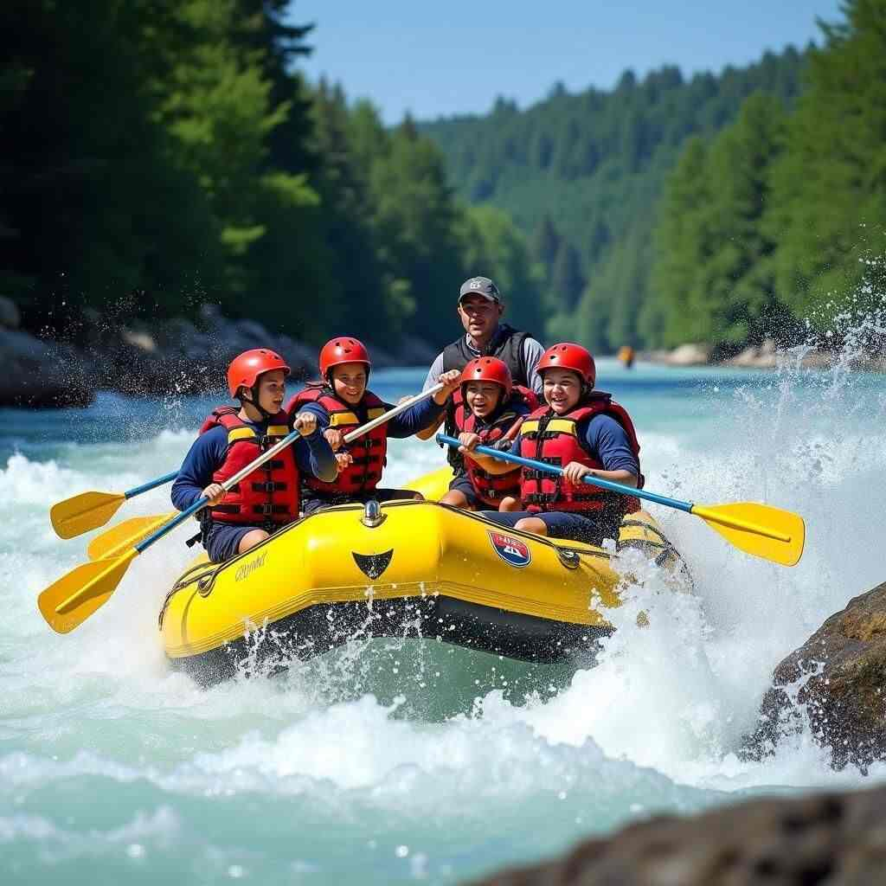
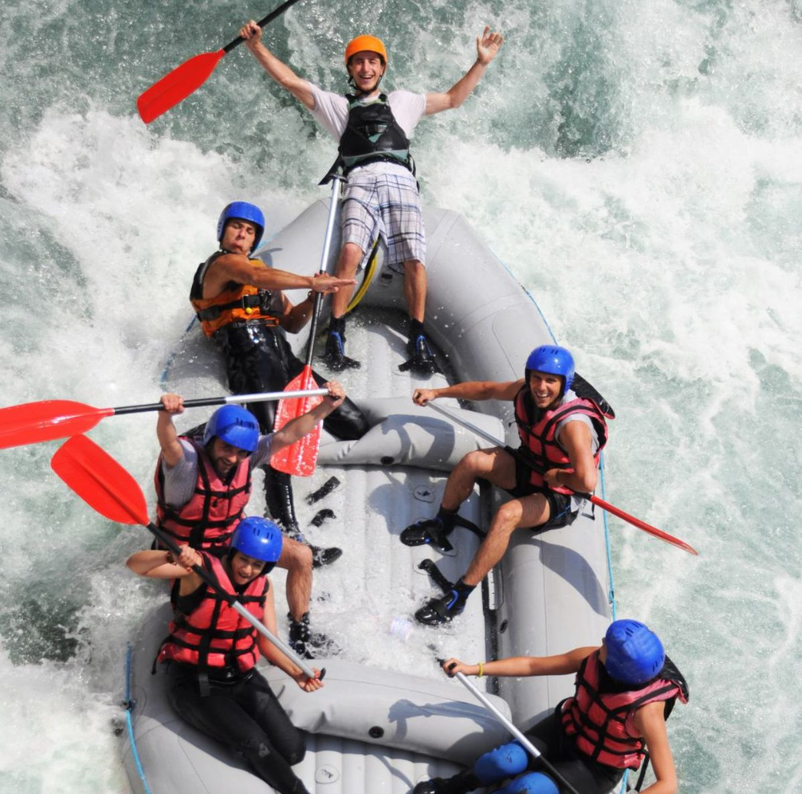
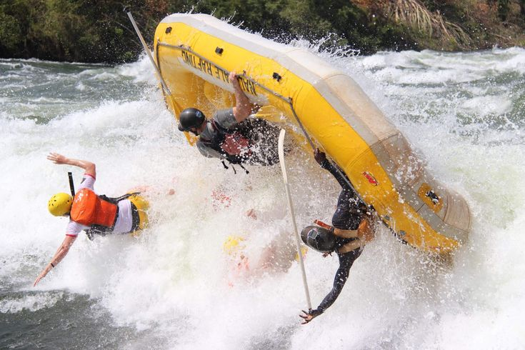

1. The Family Splash (Class I-II)

Perfect for beginners, young children, and grandparents, The Family Splash offers a relaxing, scenic introduction to river rafting. This half-day journey features gentle currents, gorgeous canyon views, and plenty of opportunities to swim in calm waters. Our expert guides handle all the rowing while sharing local history and wildlife facts, making it an educational and delightful experience for the whole family.
2. The Canyon Rush (Class III)

If you are looking for the perfect balance of excitement and breathtaking scenery, The Canyon Rush is for you. This full-day expedition takes you deep into the heart of the main river gorge, where you will face rolling waves and thrilling, bouncy rapids that require active paddling and teamwork. Halfway through the trip, we will pull over onto a pristine sandy beach for a fresh, deli-style buffet lunch prepared by your guides.
3. The Adrenaline Gorge (Class IV)

Designed strictly for seasoned thrill-seekers and active adventurers, The Adrenaline Gorge is a fast-paced, high-intensity challenge. You will navigate steep drops, tight technical channels, and powerful, roaring rapids that will get your heart pounding. Participants must be in good physical condition and ready to paddle hard under the precise commands of our most experienced swiftwater rescue guides.